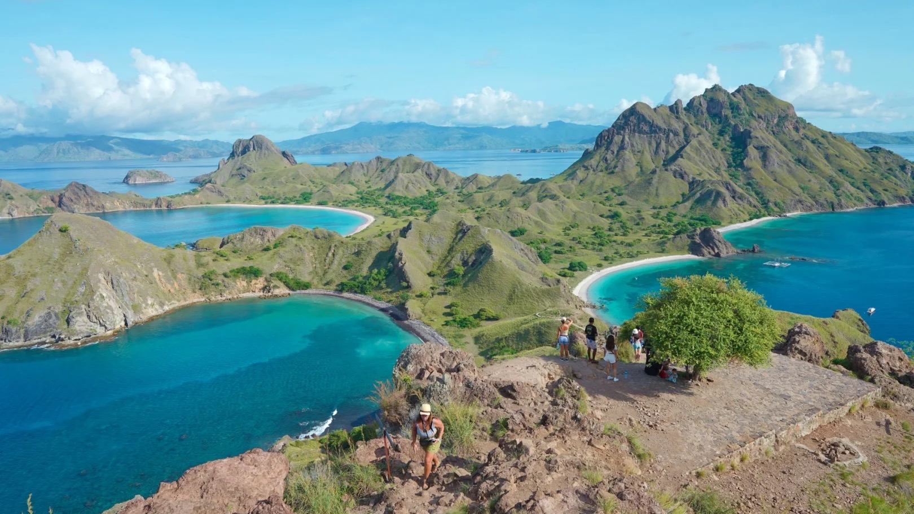
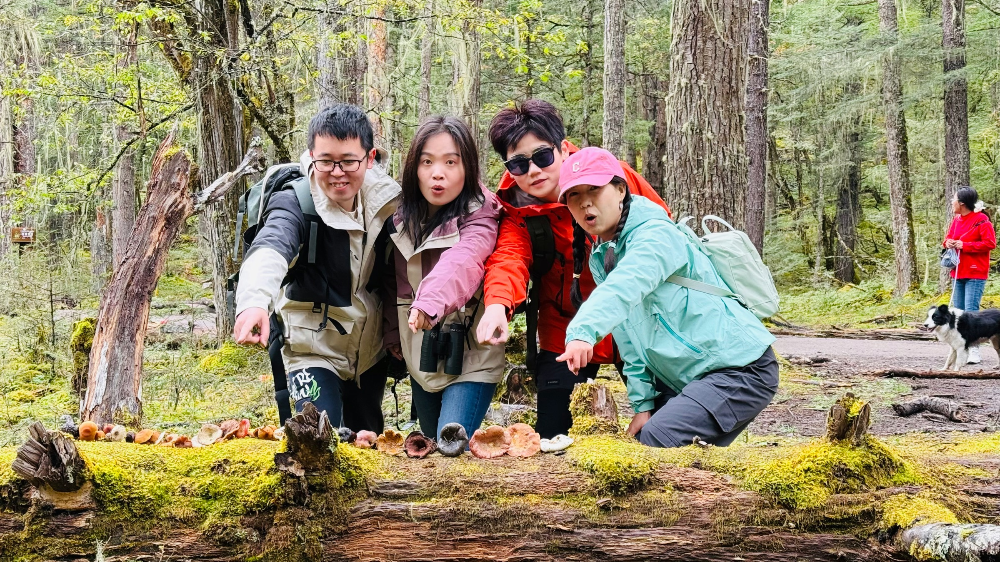
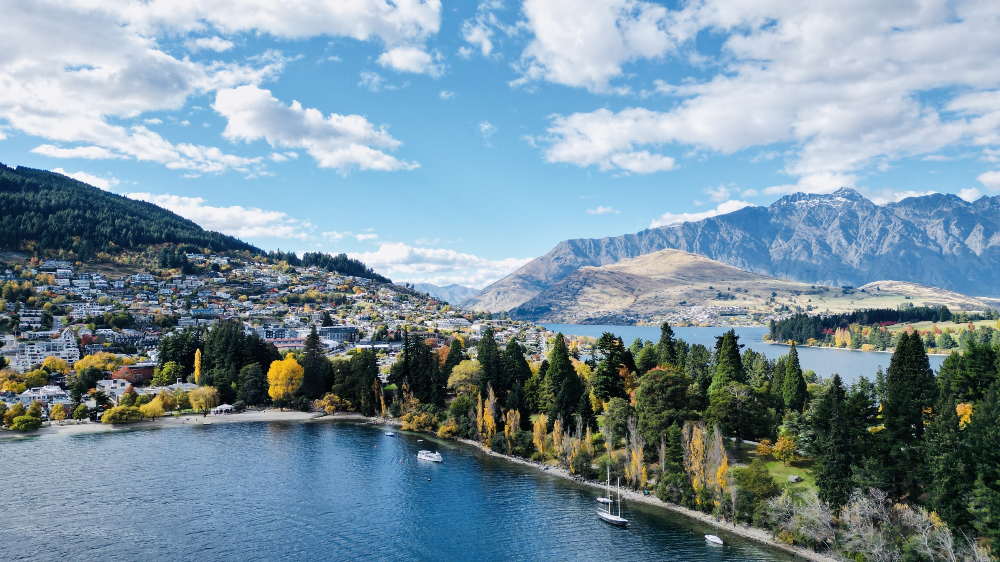

Travel Atlas
Amber的漂流日记
把想去的远方一页页展开：海风、山路、晨光、星空，
还有那些尚未抵达，却已经在心里发亮的坐标。

印尼北斗七星10日游
雅加达入境，串起日惹双遗产、布罗莫火山、赛武瀑布、泗水与科莫多海岛。
2024.09.27-10.06
跨岛路线
火山 / 瀑布 / 海岛
西班牙葡萄牙10日游
杭州往返里斯本，串起辛特拉、巴塞罗那、格拉纳达、塞维利亚与波尔蒂芒阿尔加维海岸。
2025.05.01-05.10
跨国路线
宫殿 / 高迪 / 海岸

西藏林芝14日游
林芝进、拉萨出，串起南迦巴瓦、波密、墨脱、鲁朗、巴松措、新措与拉萨慢收尾。
2025.09.28-10.11
藏东环线
雪山 / 湖泊 / 徒步
春节浪漫土耳其10日游
伊斯坦布尔海峡与老城开场，接上卡帕多奇亚热气球、玫瑰红谷徒步和安塔利亚地中海古迹。
2026.02.14-02.23
跨城路线
热气球 / 海峡 / 古城

澳洲&新西兰14日游
从 Melbourne 开场，串起 Queenstown、Milford Sound、Wanaka、Aoraki / Mount Cook、Tekapo、Auckland 与 Sydney。
2026.04.23-05.06
跨国路线
南岛 / 峡湾 / 雪山
珀斯北线7日游
Perth 慢开局，串起 Caversham、Swan Valley、Rottnest、Hutt Lagoon、Kalbarri、Cervantes 与 Pinnacles。
2026.09.25-10.01
自驾地图
海岛 / 粉红湖 / 峡谷
塔州东海岸7日游
Launceston 北进、Hobart 南出，串起 Bay of Fires、Freycinet、Maria Island、Tasman Peninsula 与 Hobart。
2026.10.01-10.07
自驾地图
自然 / 动物 / 海岸